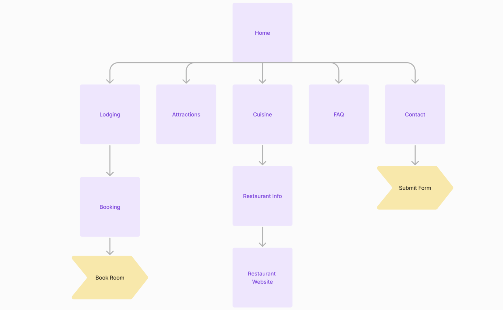
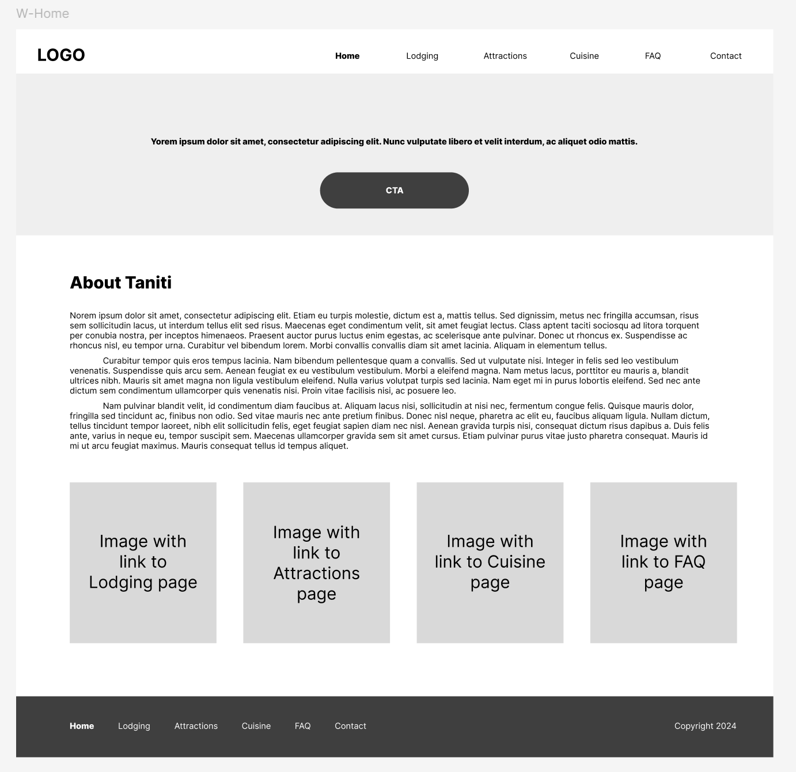
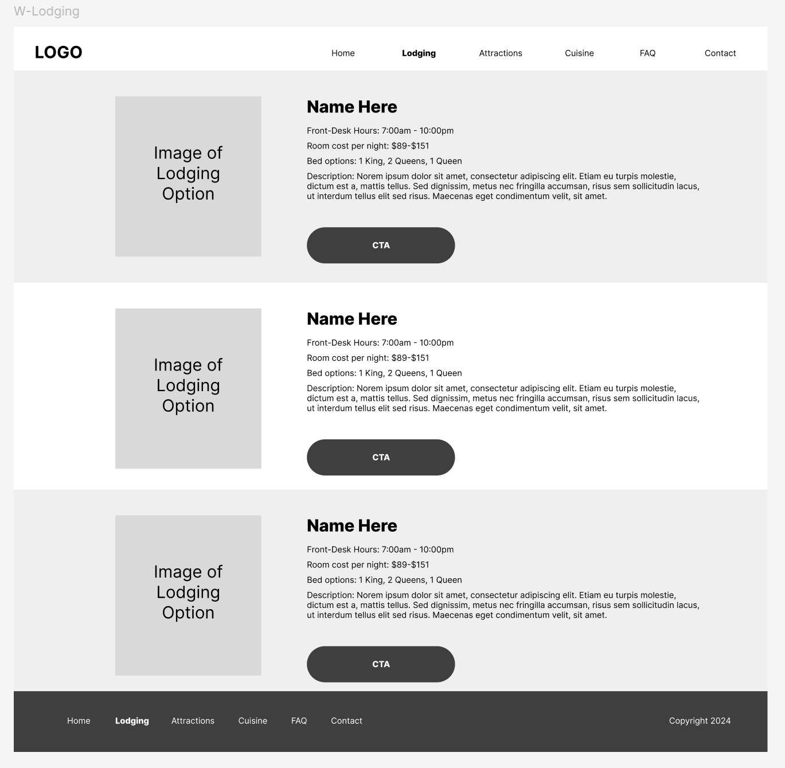
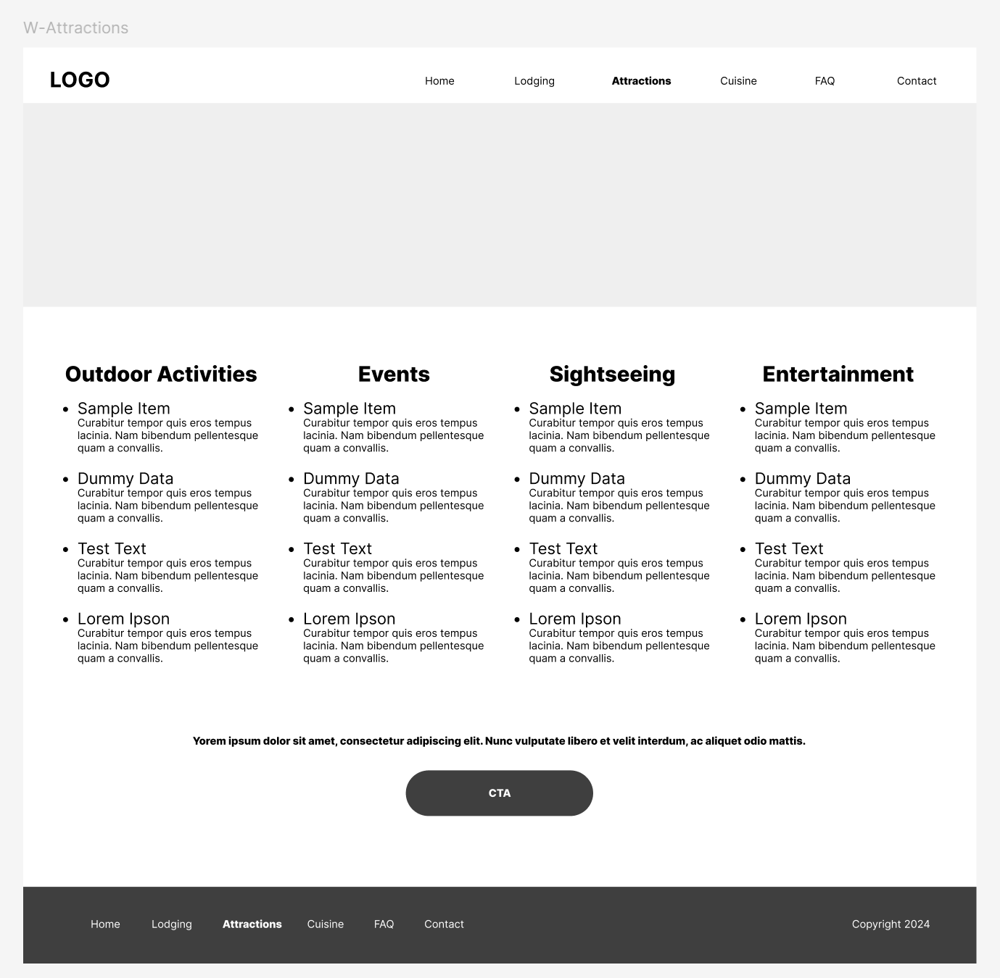
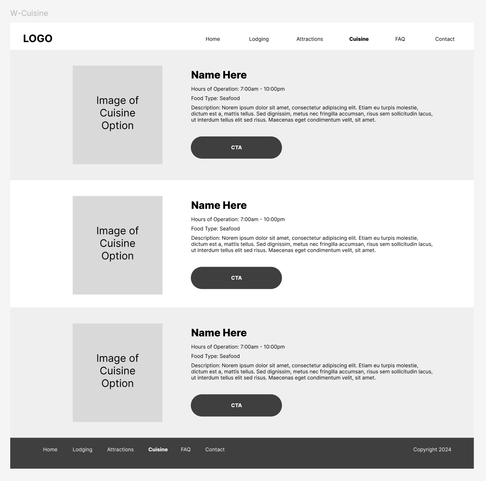
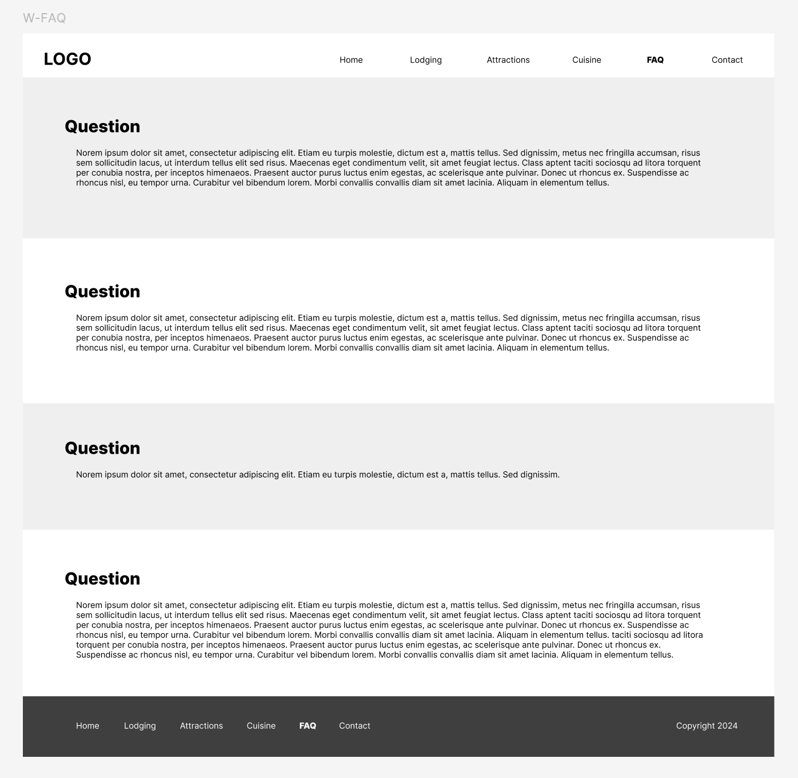
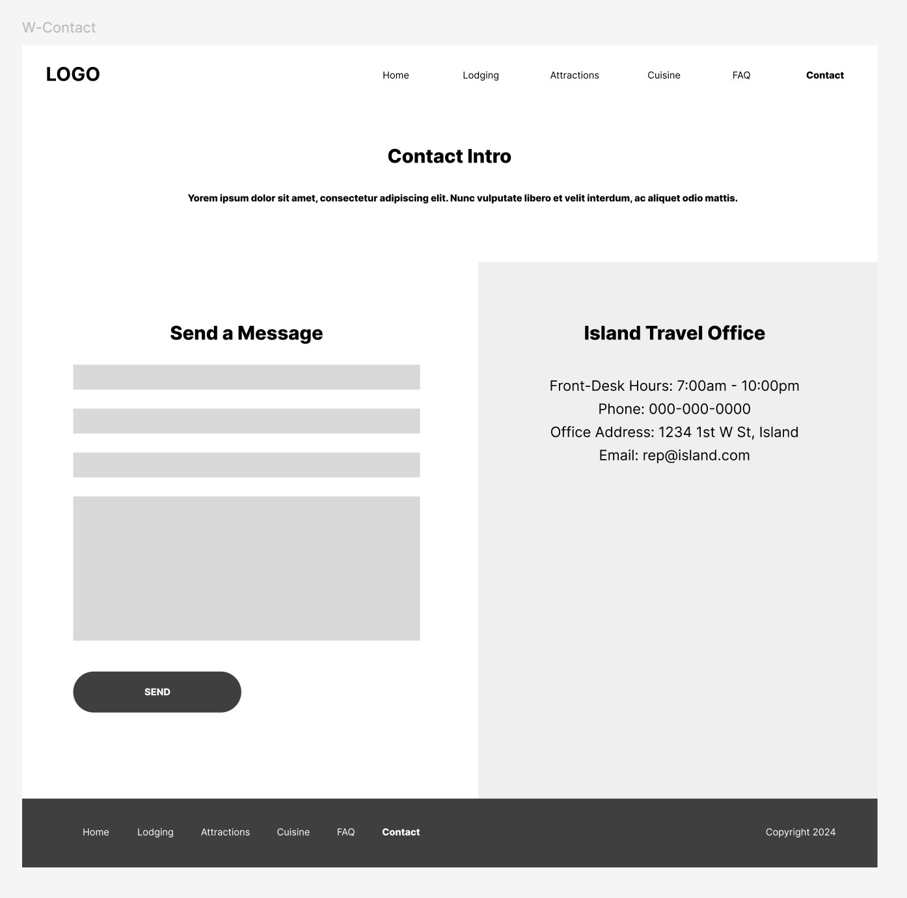
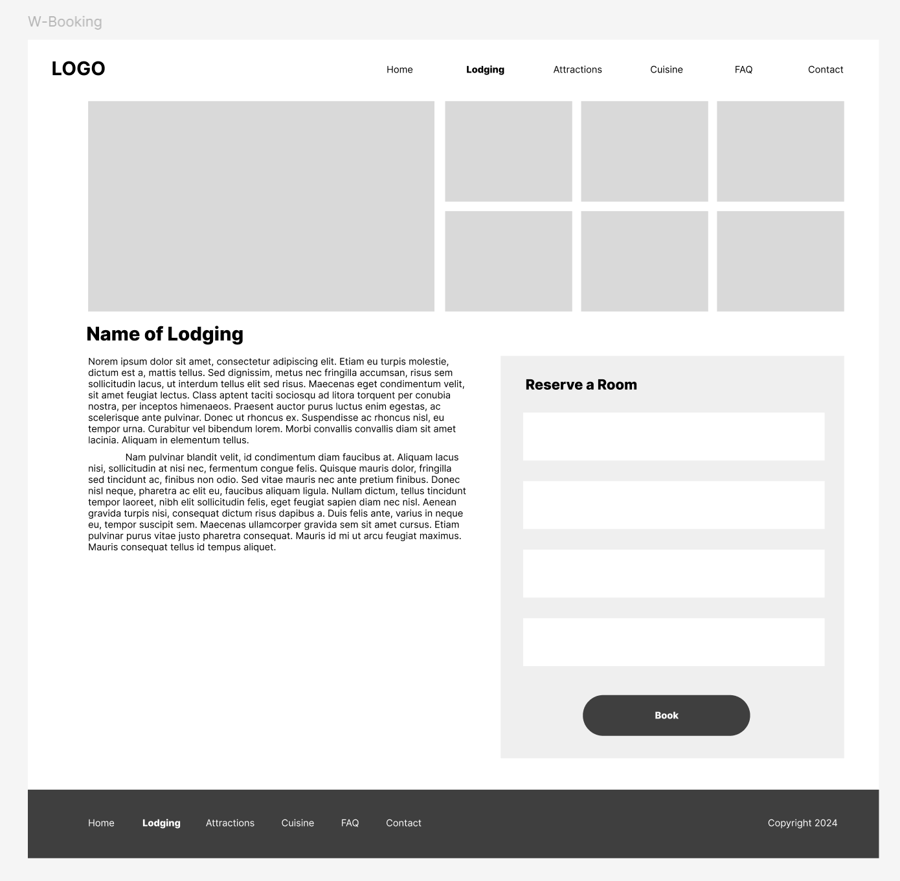
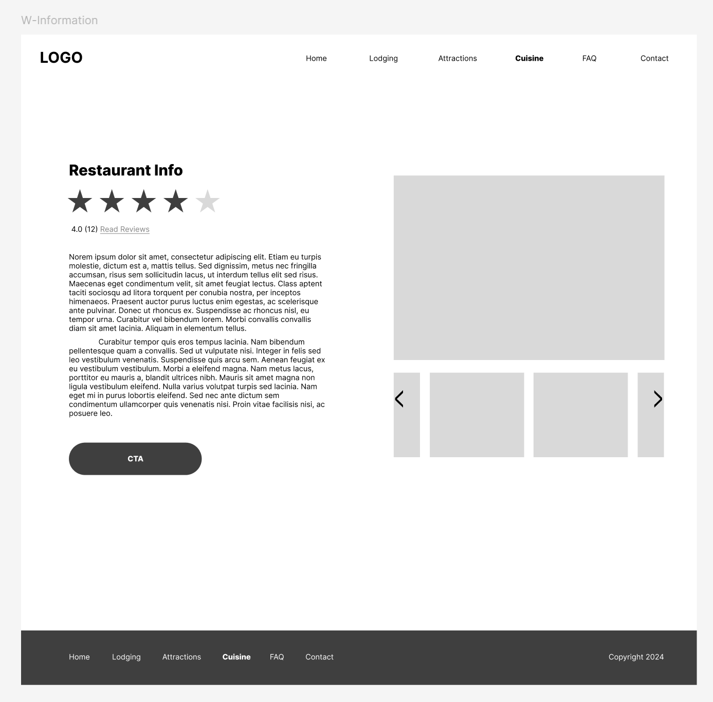
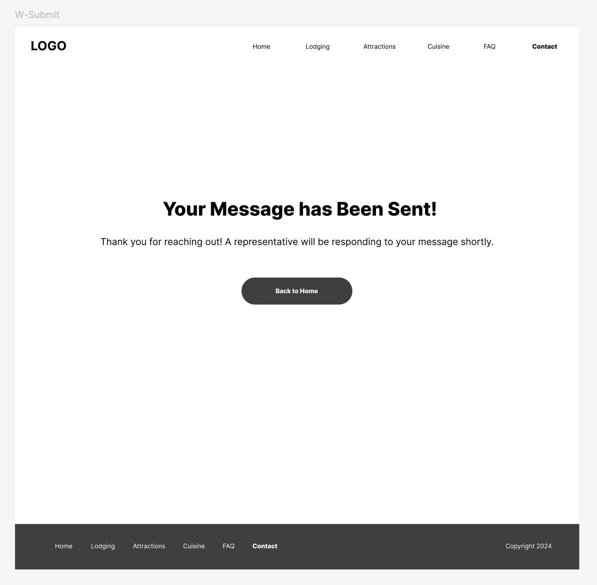

Taniti Island
A user-centered travel website design focused on vacation planning
Problem Statement
Note: This case study demonstrates the UX design process for a fictional island destination website. The solution addresses the needs of individuals and families planning vacations while providing clear, accessible information for both pre-trip planning and during-visit reference.
The island's tourism board identified a critical need to improve their online presence. While they receive a steady stream of visitors, their current website fails to effectively showcase the island's attractions or provide the detailed information that potential visitors need for trip planning.
Current Challenges
Analysis of the current website revealed several key issues:
- Fragmented information spread across multiple pages
- Lack of detailed activity and attraction information
- Poor mobile responsiveness
- Limited accommodation details
- No integration of seasonal events or current attractions
User Research
An excel file was provided which outlined demographic information about past visitors to the island. Some of the columns in this workbook included:
- Age
- Method of travel to get to the island
- Method of travel on the island
- Lodging
- Trip duration
I analyzed the data and used averages and the most commonly occuring answers to generate a user persona.
Primary User Persona
- Name: Michael Wells
- Age: 55
- Occupation: Project Manager
- Annual Income: $95,500
- Visit Duration: 6 days
- Travel Party: Family (wife and two grown children)
- Key Interests: Outdoor activities, fishing, snorkeling, zip-lining
Michael values efficient planning and needs both desktop and mobile interfaces for pre-trip planning and during-visit use. He appreciates straightforward information and wants to ensure activities will appeal to his entire family.
Design Process
Information Architecture
The website structure was designed to provide clear navigation paths to key information about lodging, attractions, and dining options. The architecture supports both pre-trip planning and during-visit reference needs.

Interface Design
The interface was developed through multiple iterations, with wireframes tested and refined based on user feedback. Key screens were designed to provide clear navigation and easy access to essential information.

Home Page
Main landing page featuring key attractions, upcoming events, and primary navigation options

Lodging Page
Overview of accommodation options with filtering capabilities and essential details

Attractions Page
Comprehensive listing of activities and points of interest, including tours and events calendar

Cuisine Page
Directory of dining options categorized by cuisine type and price range

FAQ Page
Organized sections of common questions with easy navigation to additional help

Contact Page
Contact form and essential information for reaching the tourism office

Booking Interface
Detailed lodging information with reservation form and availability calendar

Restaurant Details
Expanded view of restaurant information including ratings, hours, and cuisine details

Message Confirmation
Confirmation screen showing successful submission of contact form
Testing & Iteration
Initial Testing Results
Key Findings
- Need for amenity information in lodging section
- Better section separation in attractions page
- Addition of event calendar
- Enhanced restaurant category visibility
- Integration of FAQ contact options
Implementation Changes
Based on initial feedback, several improvements were made to the design:
- Added comprehensive amenity listings to lodging information
- Integrated events calendar for attraction planning
- Enhanced navigation with consistent top and bottom menus
- Improved visual hierarchy for restaurant categories
- Added direct contact options from FAQ page
Usability Testing
The high-fidelity prototype was tested with specific task scenarios to validate the design improvements:
- Locating transportation information
- Finding upcoming events
- Accessing room booking forms
- Identifying restaurant types
- Finding tour information
Outcome
The final design successfully addresses the core needs of family vacation planners while maintaining flexibility for future improvements. Key achievements include:
- Intuitive navigation structure supporting both planning and on-site use
- Comprehensive activity and event information
- Mobile-responsive design supporting multi-device usage
- Clear presentation of crucial travel information
Future iterations would focus on enhancing the organization of tour information and implementing a more structured FAQ system with categorical organization.